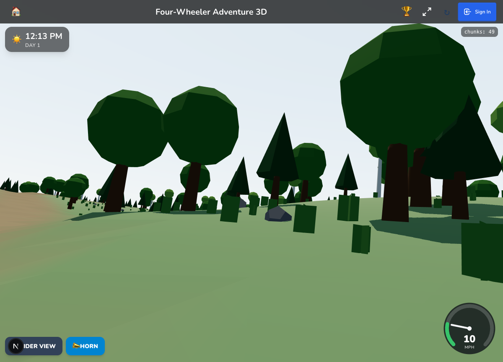
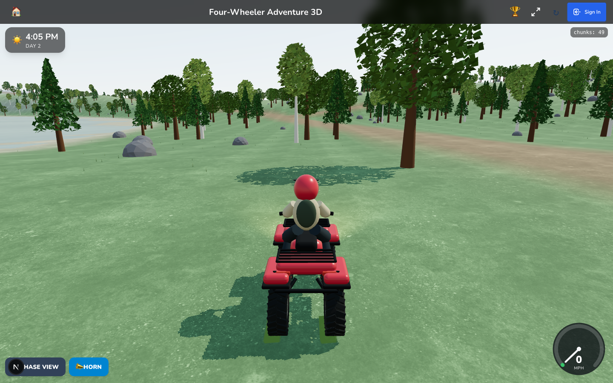
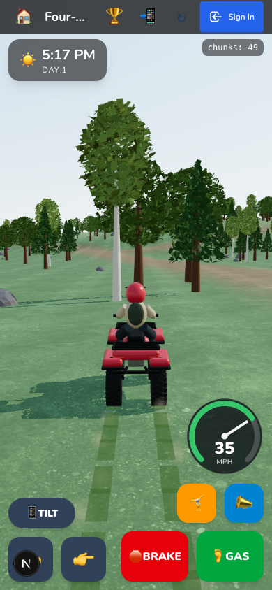
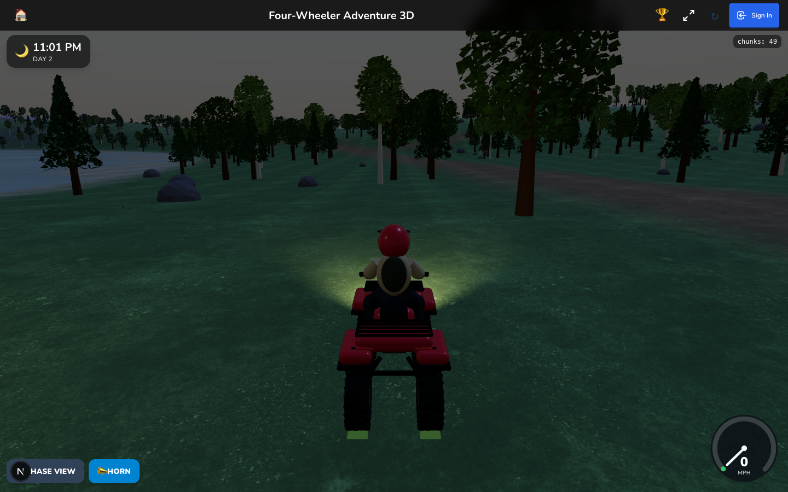

Four-Wheeler graphics pass
Upgrade the playable ATV and outdoor rendering. The checkpoint is preserved in draft PR #21. Later gameplay milestones remain separate.
- Sculpted panels, mechanical details, treaded tires and seated rider. Preserve the physics mounts and controls.
- Locally stored CC0 ground materials, detailed instanced foliage, smooth ground and outdoor lighting. Bounded chunks and pixel density.
- Desktop and touch driving, camera switching, night visibility, shader compilation and local assets verified in-browser. Tests, typecheck, lint, build and recursive review.
Acceptance
Visible improvement from the chase camera, recognizable ATV silhouette and intact suspension and controls. Phone emulation is not a real-device frame-rate claim.
Assets
Poly Haven Aerial Grass Rock, CC0, unmodified 1k JPEG color and displacement. Source, license. No new dependencies.
Verification, September 8
806 tests passed across 121 files, typecheck and production build passed, lint passed with existing repository warnings. Browser QA: desktop throttle, steering and camera switching; touch GAS plus steering at 390x844 with iPhone user agent; night riding and local material requests. Desktop and phone screenshots below are actual gameplay.
Four review perspectives covered correctness, guardrails, resource lifecycle, performance, visual design and motion, plus a failure/remount premortem. The fender self-shadow artifacts were fixed and visually rechecked. Distant chunks start at reduced detail.
Desktop RAF median 8.3 ms; p95 9.3-16.6 ms during three dense-forest teleport samples. Large teleports produced isolated 67-133 ms loading frames. The world stayed at 49 chunks. These are development-host samples, not a physical-phone performance guarantee. Phone DPR3 was capped to a 585x1266 drawing buffer.
Ground materials total 840,771 bytes. No new packages. The appearance is more detailed and natural, but remains stylized. Buildings, water rendering, and later gameplay milestones still need their own passes.
Original checkpoint

Graphics pass

Phone touch driving

Night headlights
